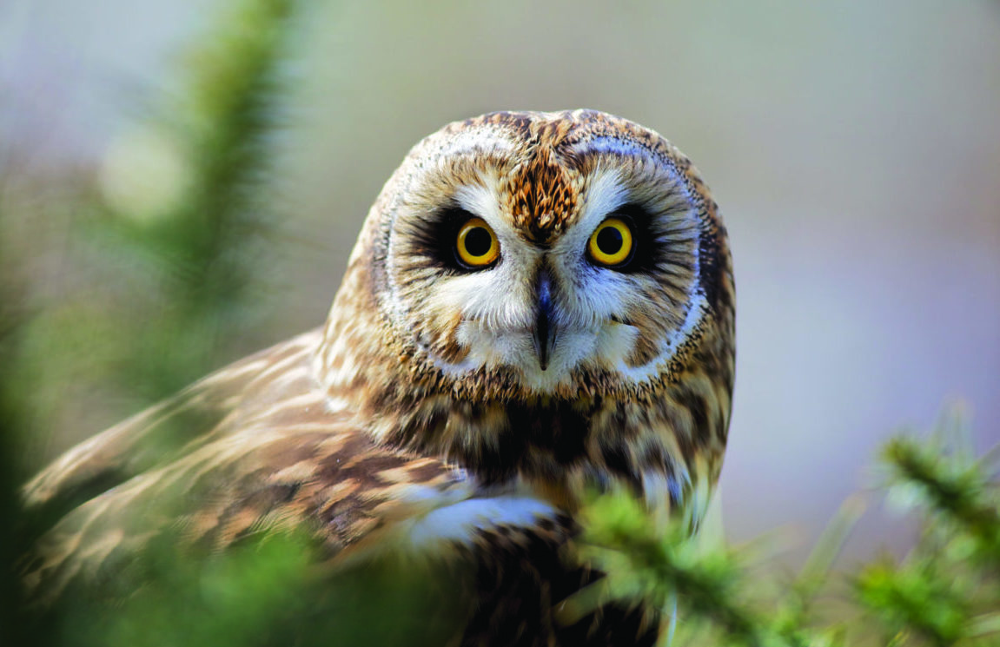
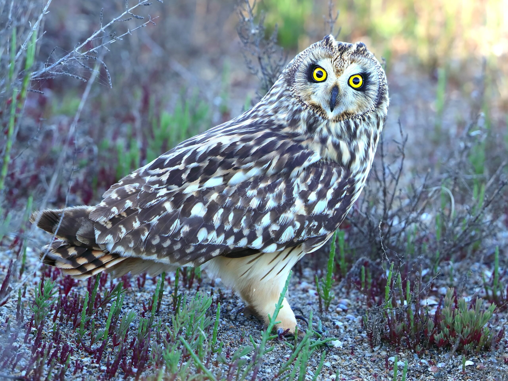
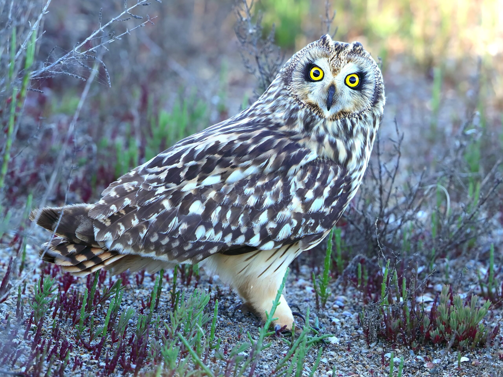

 

Le hibou des marais
Le hibou des marais (Asio flammeus) est un oiseau du Québec qui appartient à la famille des
Strigidés. C'est un rapace nocturne de taille moyenne, avec une longueur de 34 à 43 cm et une
envergure de 90 à 105 cm. Il se reconnaît à ses yeux jaunes, son disque facial pâle et ses aigrettes
courtes.